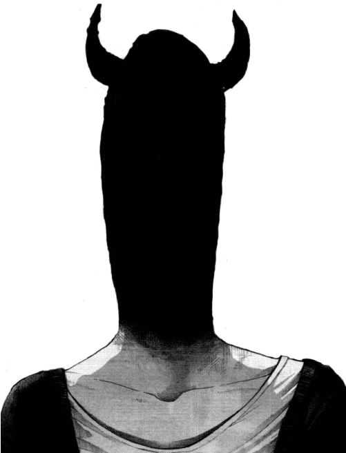
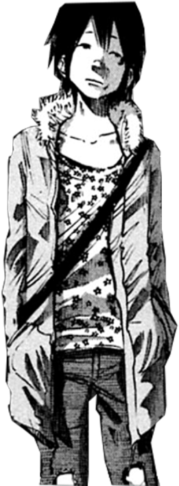
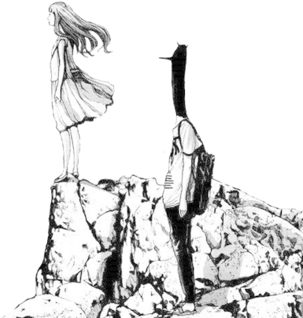

who is jix,
more or less.

a short bio
hi. i'm Jixeral — jix to friends. my real name is Lee, i'm 17, somewhere in ireland. he/him. coding is a hobby for now, though it might be more later. we'll see.
most of what i do happens after midnight. that's when i can think. that's when the internet feels small and quiet enough to actually sit in.
i'm drawn to things that feel a little sad and a little funny at the same time. punpun, takopi, frank ocean type stuff. the kind of art that makes you sit very still for a while afterward.
- nameJixeral / jix · (Lee)
- age17
- based inireland 🇮🇪
- pronounshe / him
- doinglearning to code · reading manga · plotting things
- listening totv girl · sombr · beach bunny
- currentlybuilding this website
- dreamindie game dev + a clothing brand

i think too much.
that's basically the whole thing.
i overthink everything. what to say, what to wear, what my messages sound like. coding has been good for me because the computer doesn't care how i feel about the semicolon — it just wants the semicolon.
i'm interested in game development (luau / c# / unity-shaped things eventually), design, clothing, and figuring out how the internet became what it is. i want to make small, weird, well-crafted things — things that feel like a place rather than a product.
also: i'm a christian. it's part of who i am even when nothing else is.
"i hope something good happens to you today."

things on the horizon
finish this site
add real blog posts. wire up the guestbook properly. keep tweaking.
ship a small game
something tiny, weird, mine. a 5-minute experience. just to prove i can.
print a t-shirt
first jixeral piece. punpun-coded, of course.

"i'll catch up to you. eventually."